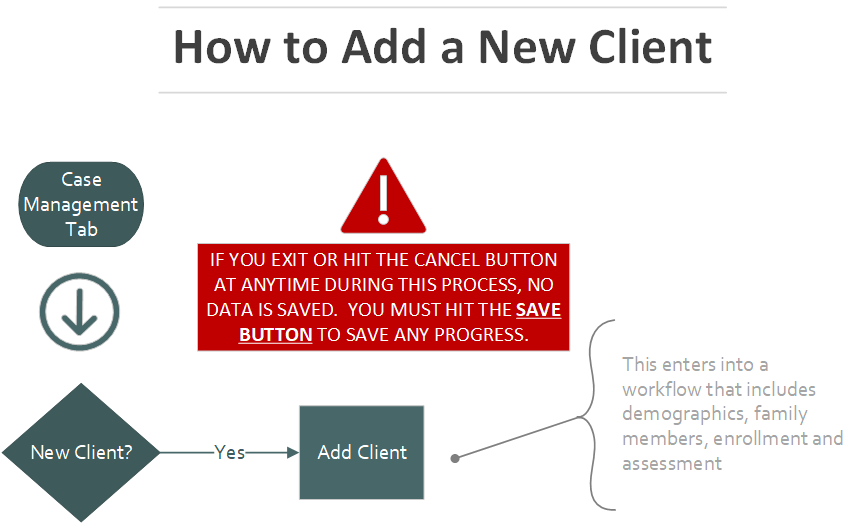
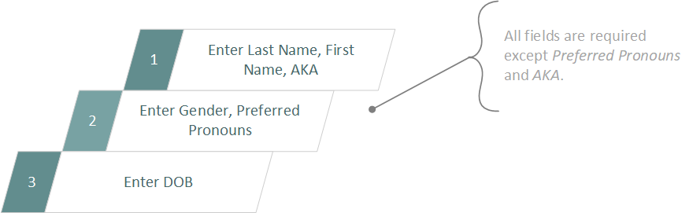
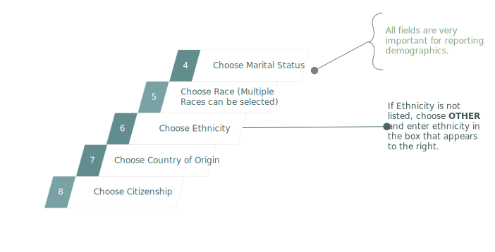
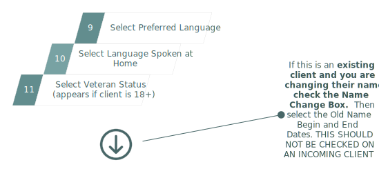
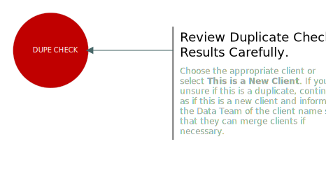
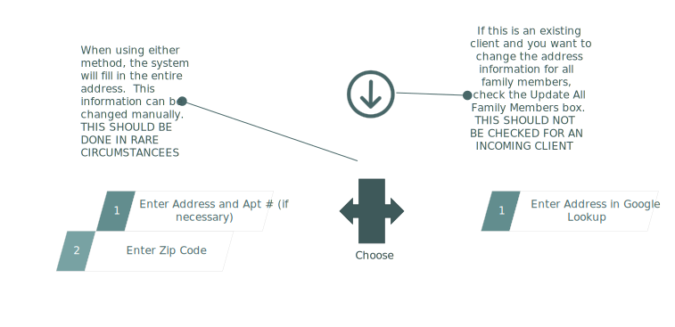
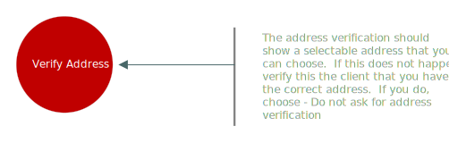
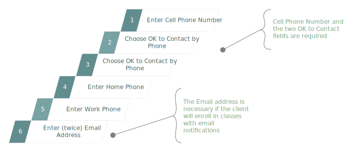

Adding a new client
When you add a new client in CW you automatically enter into a workflow. This means that there are predefined steps that are required in order to complete the process. For a new client these steps are: client demographics, family members, enrollment, assessment and services.
To start this process, you want to go to the Case Management tab, and choose Add Client from the left menu.

Client Demographics
Once you have selected Add Client, you have entered into the New Client Workflow. The first step to this process is to fill in the client demographic. Start by filling out the first and last name, selecting a gender and entering in a birth date.

Continue filling out the demographics. Again, much of this data is extremely important for reporting. Please be as thorough as possible. Just because a box is not marked as required (a little red star) doesn't mean the information is not important for reporting and to help you and other case managers provide the client with the most appropriate help and options.

Work through the remaining questions. If your client is 18 years or older, a question regarding veteran status will also appear

Now that the entire page has been filled out, you must check for duplicate clients. This is an important step for not only data integrity, but also for you to know if the client has been to CCAOH before. Review this information carefully and contact the Data Team if you suspect duplicate accounts.

Hit Next at the bottom of the page and finish off the client demographics by entering in the client's address and contact information.
On the Address tab you have a choice. You can choose to use the Google Lookup field or you can enter in the information below. If you choose the Google Lookup field, as you type you will be shown a list of verified addresses that match your input. If you choose to instead enter the address information on the bottom portion of the screen, when you select the Zip Code box and pop up window will appear. This will verify the zip code you enter and automatically fill in the city, state and country.

Once the address has been entered, you must verify the address. Select the Verify Address button. A pop up will appear showing you a verified address. If that is the client's address, select it and then hit Next

After you hit Next, you are onto the final page of client demographics. On this page you can enter the client's phone number(s) and email address. You must also ask the client for permission to contact them by text and phone and record their answers in the appropriate boxes.

Hit Save and now move on to the second step of the New Client Workflow.
Add Family Members
When you create a new client, CW creates a ClientID as well as a FamilyID. All clients with the same FamilyID are grouped together. The first client is automatically added as the Head of Household. If this needs to be changed, contact the data team. If a family member needs to be removed from a family, whether because of a mistake in data entry or a change in the family, contact the data team. Attempting to rectify the situation yourself could result in orphaned clients and lost data.
If your client does not have family members to add, you can skip this step by hitting Save at the bottom of the screen.